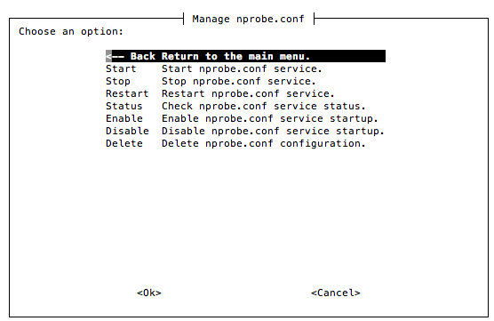

Как начать nProbe
Системы на базе Systemd
Служба nProbe управляется с помощью утилиты systemctl в операционных системах и дистрибутивах, использующих диспетчер служб systemd.
При успешной установке пакета служба nProbe автоматически запускается на петлевом интерфейсе, а также по умолчанию запускается при загрузке. Чтобы предотвратить такое поведение, службу можно отключить, как описано в следующих разделах.
Файлы конфигурации
Служба по умолчанию использует файл конфигурации, который находится по адресу /etc/nprobe/nprobe.conf и который во время установки заполняется некоторыми значениями по умолчанию. Файл конфигурации можно редактировать и расширять с помощью любого параметра конфигурации, поддерживаемого nProbe. После изменения файла конфигурации требуется перезапуск службы.
На одном компьютере могут одновременно выполняться несколько экземпляров nProbe. Обычно каждый экземпляр привязан к интерфейсу. Чтобы обеспечить возможность запуска различных nProbe с независимыми конфигурациями, в каталоге сосуществуют несколько файлов конфигурации:
/etc/nprobe/
Каждый файл конфигурации начинается с «nprobe-» и заканчивается суффиксом, соответствующим имени интерфейса, с которым он связан, исключение сделано для служба по умолчанию nProbe, соответствующая файлу конфигурации nprobe.conf. Например, если предположить, что три разных демона nProbe должны быть запускаться независимо для eth0, eth4 и myri0, в дополнение к службе по умолчанию должны присутствовать следующие файлы конфигурации:
# ls -lha /etc/nprobe/
total 28K
4.0K -rw-r--r-- 1 root root 211 Mar 15 17:54 nprobe.conf
4.0K -rw-r--r-- 1 root root 211 Mar 15 17:54 nprobe-eth0.conf
4.0K -rw-r--r-- 1 root root 195 Jan 8 17:17 nprobe-eth4.conf
4.0K -rw-r--r-- 1 root root 215 Jan 8 17:22 nprobe-myri0.conf
Когда nProbe используется в режиме зонда, он не привязан к какому-либо интерфейсу, поскольку его задача состоит в том, чтобы собрать NetFlow с какого-либо другого устройства. В этом случае создается файл конфигурации:
nprobe-none.conf
Редактирование файлов конфигурации
Люди, знакомые с редакторами, могут создавать и изменять файлы конфигурации. Однако для rest из нас есть инструментальная часть пакета nProbe, предназначенная только для Linux и называемая nprobe-config это позволяет вам редактировать файлы конфигурации в интерактивном режиме. Вам необходимо запустить его от имени суперпользователя (или sudo nprobe-config) и следовать инструкциям на экране. Ниже вы можете найти два примера того, как работает инструмент.


Автоматический запуск
Чтобы запустить, остановите и перезапустите тип службы по умолчанию nProbe:
systemctl start nprobe
systemctl stop nprobe
systemctl restart nprobe
Чтобы предотвратить запуск nProbe при типе загрузки:
systemctl disable nprobe
Или, чтобы запустить nProbe при загрузке, если он ранее был отключен, введите:
systemctl enable nprobe
Чтобы проверить статус службы, включая ее выходные данные и PID, введите:
systemctl status nprobe
Для управления дополнительными службами на основе имени интерфейса, указанного в имени файла конфигурации, как описано в разделе В предыдущем разделе следует использовать сервис «nprobe@<interface>», пример:
systemctl enable nprobe@eth0
systemctl start nprobe@eth0
системы на основе инициализации
Системы на основе Init обычно доступны только во встроенных системах, в противном случае по умолчанию используются базовые сценарии systemd. Службой nProbe можно управлять в старых системах на основе инициализации с помощью скрипта, расположенного по адресу:
/etc/init.d/nprobe
Чтобы автоматически запускать демоны nProbe при запуске системы, в том же каталоге, что и файлы конфигурации, необходимо создать пустые файлы, заканчивающиеся на «.start».
# ls -lha /etc/nprobe
-rw-r--r-- 1 root root 211 mar 15 17:54 nprobe-eth0.conf
-rw-r--r-- 1 root root 0 mar 17 15:44 nprobe-eth0.start
Этими конфигурациями можно управлять с помощью сценария /etc/init.d/nprobe. Скрипт принимает на вход различные параметры и одно или несколько имен интерфейсов. Вызов сценария без параметров дает следующую краткую справку:
sudo /etc/init.d/nprobe
Usage: /etc/init.d/nprobe {start|force-start|stop|restart|status} [interface(s)]
Опции и использование сценария управления демоном обсуждаются ниже.
начинать
Эта опция используется для запуска демона nProbes для интерфейсов, имеющих файл «.start». Вызов start на интерфейсах с отсутствующими файлами «.start» приводит к ошибке. Например
# ls -lha /etc/nprobe
-rw-r--r-- 1 root root 211 mar 15 17:54 nprobe-eth0.conf
-rw-r--r-- 1 root root 0 mar 17 15:44 nprobe-eth0.start
-rw-r--r-- 1 root root 195 Jan 8 17:17 nprobe-eth4.conf
-rw-r--r-- 1 root root 215 Jan 8 17:22 nprobe-myri0.conf
# /etc/init.d/nprobe start eth0
Starting nProbe eth0
# /etc/init.d/nprobe start eth4
nProbe eth4 not started: missing /etc/nprobe/nprobe-eth4.start
принудительный запуск
Эта опция используется для запуска демона nProbes для экземпляров, у которых нет файла «.start». Вызов принудительного запуска на интерфейсе eth4, показанном в примере выше, не вызывает никаких ошибок, и демон запускается правильно.
# /etc/init.d/nprobe force-start eth4
Starting nProbe eth4
останавливаться
Эта опция используется для остановки экземпляра демона nProbe. Например
# /etc/init.d/nprobe stop eth4
Stopping nProbe eth4
перезапуск
Эта опция вызывает перезапуск демона, связанного с данным интерфейсом, например:
# /etc/init.d/nprobe restart eth0
Stopping nProbe eth0
Starting nProbe eth0
статус
Эта опция выводит статус демона, связанного с данным интерфейсом, например:
# /etc/init.d/nprobe status eth0
nprobe running
Запуск nProbe на Windows
nProbe можно активировать как службу или как приложение (т.е. запустить его можно из cmd.exe). Установщик nProbe регистрирует службу и создает запись в меню «Пуск». Чтобы отобразить встроенную справку nProbe, исполняемый файл необходимо запустить с параметром /h.
C:\Program Files\nProbe>nprobe /h
Доступные варианты:
/i <имя службы> [nprobe параметры] Установить nprobe как службу
/c [nprobe параметры] Запустить nprobe на консоли
/r <имя службы> Деинсталлировать службу
Пример:
Установите nprobe как сервис: nprobe /i my_nProbe -i 0 -n 192.168.0.1:2055
Удалите службу nprobe: nprobe /r my_nProbe
Примечания:
Введите «nprobe /c -h», чтобы увидеть все варианты.
Чтобы переустановить службу с новыми опциями, необходимо сначала удалить службу, а затем добавить ее снова с новыми опциями.
Запуск/остановка служб осуществляется с помощью пункта панели управления «Службы».
Вы можете установить службу nProbe несколько раз, если используете разные имена служб.
Полный список опций доступен с помощью nprobe /c -h. Если на консоли запущен nProbe, необходимо использовать флаг /c (например, nprobe /c –n 127.0.0.1:2055).
Укажите отслеживаемые интерфейсы
Поскольку сетевые интерфейсы на Windows могут иметь длинные имена, с интерфейсом связан числовой индекс, чтобы упростить настройку nProbe. Имя и индекс интерфейса ассоциации отображаются при вводе «nprobe /c –h»
C:\ntop\nprobe\Debug>nprobe.exe/c -h
Available interfaces:
[index=0] 'Adapter for generic dialup and VPN capture'
[index=1] 'Realtek 8139-series PCI NIC'
Например, в приведенном выше примере индекс 1 связан с интерфейсом Realtek серии 8139 PCI NIC, поэтому для выбора этого интерфейса nprobe необходимо запустить с опцией –i 1.
Исполнение как услуга Windows
Службы Windows запускаются и останавливаются с помощью прикладной части «Службы» инструментов администрирования Windows. Когда nProbe используется в качестве службы, параметры командной строки необходимо указать при регистрации службы, и их можно изменить только путем удаления и добавления службы. Установщик nProbe регистрирует nProbe как службу с параметрами по умолчанию. Если вам нужно изменить настройку nProbe, вам нужно сделать следующее:
nprobe /r Remove the service
nprobe /i <put your options here> Install the service with
the specified options.